파손된 시설물, 방치하면 더 큰 사고가 됩니다.
신속하게 출동하여 튼튼하게 복구해 드립니다.
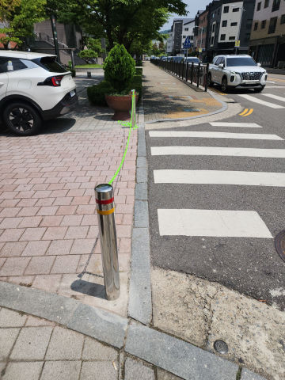
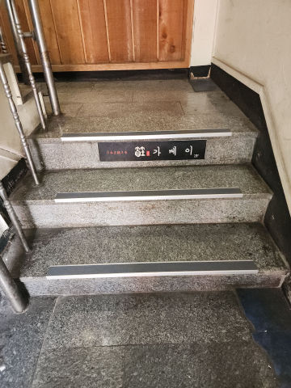
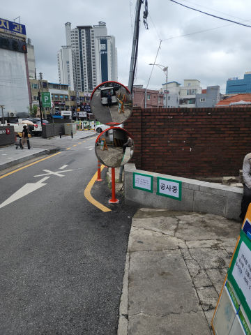
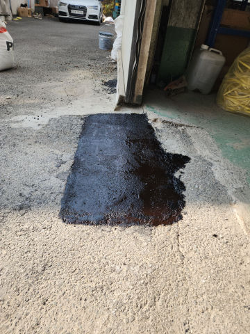
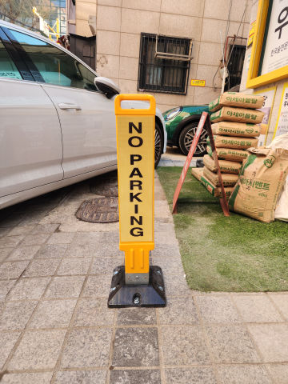
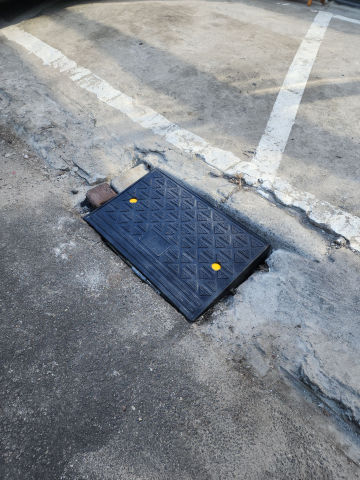
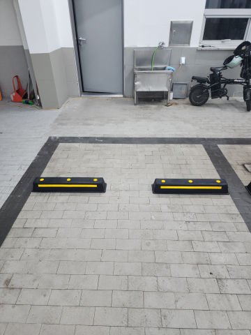
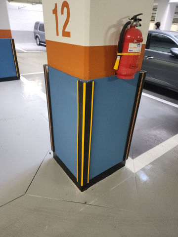
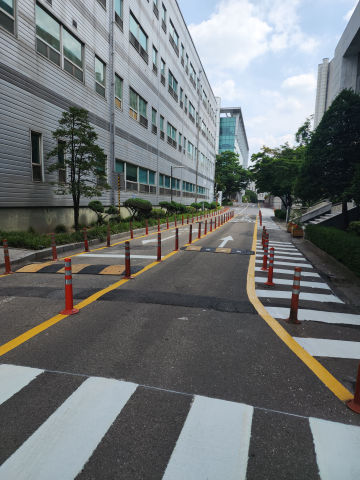
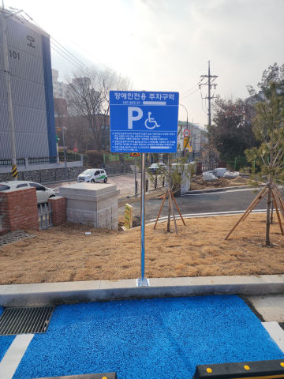
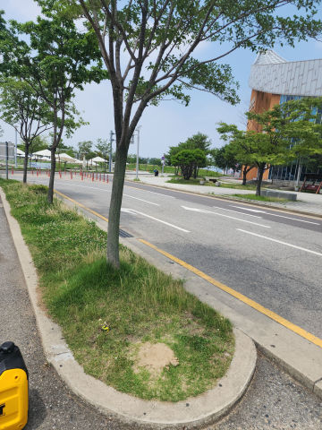
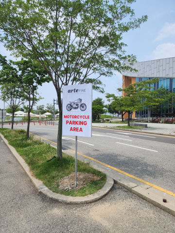
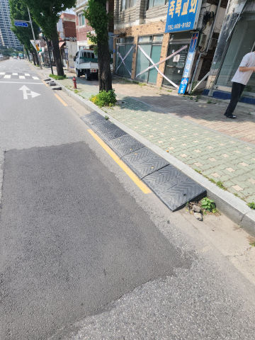
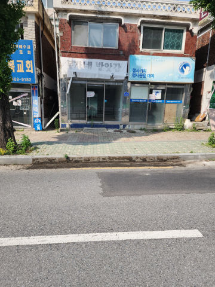
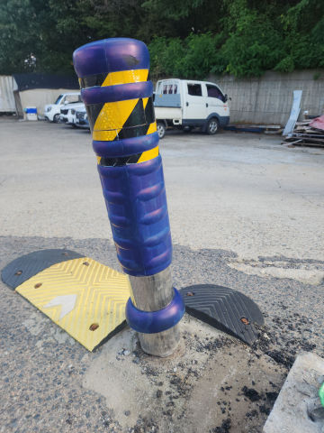
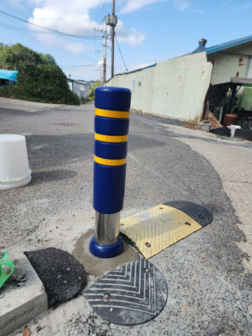
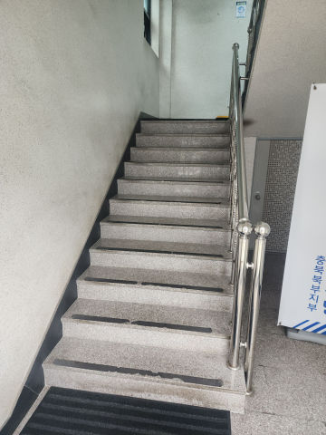
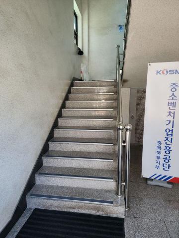
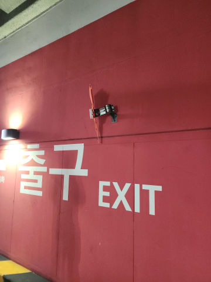
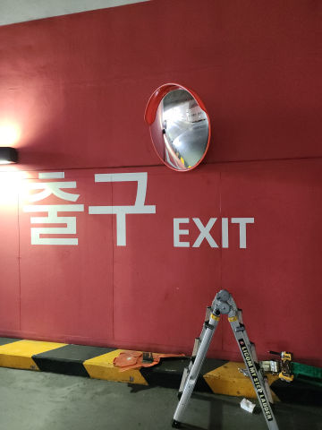
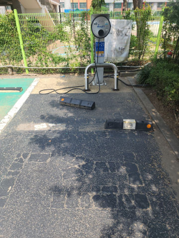
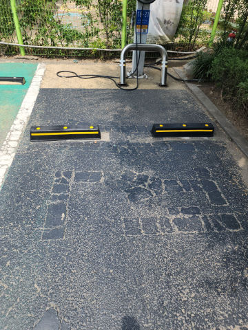
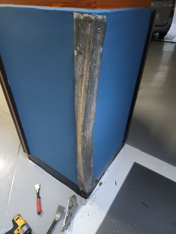
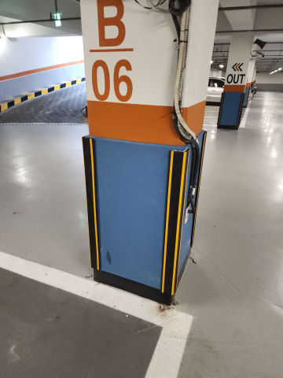
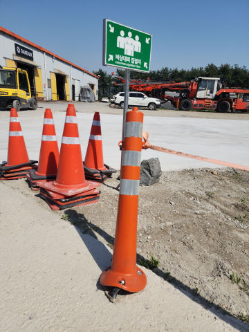
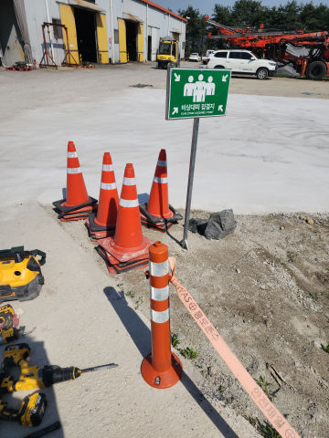
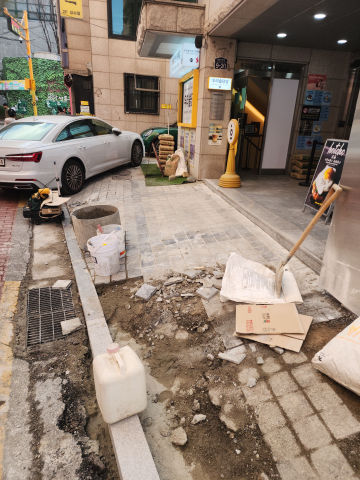
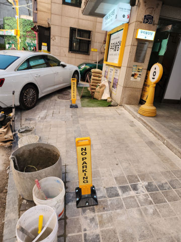
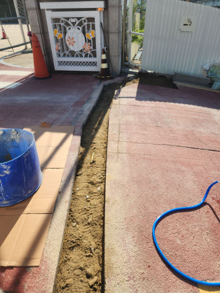
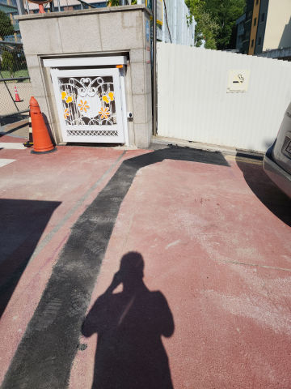
사진을 옆으로 밀어서 파손 복구 현장을 확인하세요 👉
"방지턱이 깨져서 차 긁힐까 봐 조마조마했는데 연락드리자마자 당일 바로 오셔서 튼튼하게 바꿔주셨어요."
"누가 카스토퍼를 박고 도망가서 덜렁거렸는데, 기존 구멍까지 싹 메우고 새 걸로 짱짱하게 박아주셨습니다."
"볼라드가 차에 받혀서 꺾여있었는데 깔끔하게 철거하고 새 걸로 교체해 주셔서 미관상 너무 좋습니다."
"주차장 입구에 싱크홀처럼 파인 곳 땜빵 기가 막히게 해주셨습니다. 덜컹거림이 싹 사라졌네요."
"강풍에 표지판이 뽑혀서 사람 다칠 뻔했는데 긴급 출동하셔서 콘크리트 부어서 절대 안 흔들리게 해주셨어요."
리페어벤져스는 성남시 중원구 성남동의 파손된 시설물을 안전하게 철거하고 튼튼하게 교체 시공합니다.
강풍이나 충돌로 쓰러진 지주형 표지판을 더 깊은 천공과 몰탈 작업으로 절대 흔들리지 않게 재매립합니다.
※ 현장에서는 파손 상태에 따라 [표지판수리, 지주형표지판교체, 안내판재설치] 등 다양한 수리 방법이 적용됩니다.
파손된 부위의 사진을 보내주시면 가장 빠르고 정확한 견적 산출이 가능합니다.